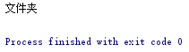

<!DOCTYPE html>
<html>
<head><meta name="generator" content="Hexo 3.9.0">
  <meta charset="utf-8">
  
<!-- Google Analytics -->
<script type="text/javascript">
(function(i,s,o,g,r,a,m){i['GoogleAnalyticsObject']=r;i[r]=i[r]||function(){
(i[r].q=i[r].q||[]).push(arguments)},i[r].l=1*new Date();a=s.createElement(o),
m=s.getElementsByTagName(o)[0];a.async=1;a.src=g;m.parentNode.insertBefore(a,m)
})(window,document,'script','//www.google-analytics.com/analytics.js','ga');

ga('create', 'UA-86850493-1', 'auto');
ga('send', 'pageview');

</script>
<!-- End Google Analytics -->


  
  <title>在python中使用pytesseract进行简单的OCR | Geek boood&#39;s blog</title>
  <meta name="viewport" content="width=device-width, initial-scale=1, maximum-scale=1">
  <meta name="description" content="Tesseract是一款由HP实验室开发由Google维护的开源OCR引擎，通过这个引擎我们可以进行简单的OCR任务。">
<meta property="og:type" content="article">
<meta property="og:title" content="在python中使用pytesseract进行简单的OCR">
<meta property="og:url" content="https://geekboood.github.io/2017/02/13/在Python中使用pytesseract进行简单的OCR/index.html">
<meta property="og:site_name" content="Geek boood&#39;s blog">
<meta property="og:description" content="Tesseract是一款由HP实验室开发由Google维护的开源OCR引擎，通过这个引擎我们可以进行简单的OCR任务。">
<meta property="og:locale" content="default">
<meta property="og:image" content="https://geekboood.github.io/2017/02/13/在Python中使用pytesseract进行简单的OCR/1.jpg">
<meta property="og:image" content="https://geekboood.github.io/2017/02/13/在Python中使用pytesseract进行简单的OCR/1.png">
<meta property="og:image" content="https://geekboood.github.io/2017/02/13/在Python中使用pytesseract进行简单的OCR/2.png">
<meta property="og:updated_time" content="2019-07-31T04:07:51.041Z">
<meta name="twitter:card" content="summary">
<meta name="twitter:title" content="在python中使用pytesseract进行简单的OCR">
<meta name="twitter:description" content="Tesseract是一款由HP实验室开发由Google维护的开源OCR引擎，通过这个引擎我们可以进行简单的OCR任务。">
<meta name="twitter:image" content="https://geekboood.github.io/2017/02/13/在Python中使用pytesseract进行简单的OCR/1.jpg">
  
    <link rel="alternate" href="/atom.xml" title="Geek boood&#39;s blog" type="application/atom+xml">
  
  
    <link rel="icon" href="/favicon.png">
  
  
    <link href="//fonts.googleapis.com/css?family=Source+Code+Pro" rel="stylesheet" type="text/css">
  
  <link rel="stylesheet" href="/css/style.css">
</head>
</html>
<body>
  <div id="container">
    <div id="wrap">
      <header id="header">
  <div id="banner"></div>
  <div id="header-outer" class="outer">
    <div id="header-title" class="inner">
      <h1 id="logo-wrap">
        <a href="/" id="logo">Geek boood&#39;s blog</a>
      </h1>
      
    </div>
    <div id="header-inner" class="inner">
      <nav id="main-nav">
        <a id="main-nav-toggle" class="nav-icon"></a>
        
          <a class="main-nav-link" href="/">Home</a>
        
          <a class="main-nav-link" href="/archives">Archives</a>
        
      </nav>
      <nav id="sub-nav">
        
          <a id="nav-rss-link" class="nav-icon" href="/atom.xml" title="RSS Feed"></a>
        
        <a id="nav-search-btn" class="nav-icon" title="Search"></a>
      </nav>
      <div id="search-form-wrap">
        <form action="//google.com/search" method="get" accept-charset="UTF-8" class="search-form"><input type="search" name="q" class="search-form-input" placeholder="Search"><button type="submit" class="search-form-submit">&#xF002;</button><input type="hidden" name="sitesearch" value="https://geekboood.github.io"></form>
      </div>
    </div>
  </div>
</header>
      <div class="outer">
        <section id="main"><article id="post-在Python中使用pytesseract进行简单的OCR" class="article article-type-post" itemscope itemprop="blogPost">
  <div class="article-meta">
    <a href="/2017/02/13/在Python中使用pytesseract进行简单的OCR/" class="article-date">
  <time datetime="2017-02-12T16:00:00.000Z" itemprop="datePublished">2017-02-13</time>
</a>
    
  </div>
  <div class="article-inner">
    
    
      <header class="article-header">
        
  
    <h1 class="article-title" itemprop="name">
      在python中使用pytesseract进行简单的OCR
    </h1>
  

      </header>
    
    <div class="article-entry" itemprop="articleBody">
      
        <p>Tesseract是一款由HP实验室开发由Google维护的开源OCR引擎，通过这个引擎我们可以进行简单的OCR任务。</p>
<a id="more"></a>
<p>首先安装pytesseract</p>
<figure class="highlight bash"><table><tr><td class="gutter"><pre><span class="line">1</span><br></pre></td><td class="code"><pre><span class="line">pip install pytesseract</span><br></pre></td></tr></table></figure>

<p>其实python中这个模块只是简单的把这个软件包装了一下，在电脑的临时文件夹中tesseract输出OCR识别出的内容为txt，然后去读取他。在windows下使用时建议用3.05.00dev版，4.00.00dev版出现了点问题，暂时没有研究。<br>另外还要指定tesseract程序的位置，代码如下：</p>
<figure class="highlight plain"><table><tr><td class="gutter"><pre><span class="line">1</span><br></pre></td><td class="code"><pre><span class="line">pytesseract.pytesseract.tesseract_cmd = &apos;C:/Program Files (x86)/Tesseract-OCR/tesseract&apos;</span><br></pre></td></tr></table></figure>

<p>还要修改pytesseract.py，将第165行改为:</p>
<figure class="highlight plain"><table><tr><td class="gutter"><pre><span class="line">1</span><br></pre></td><td class="code"><pre><span class="line">f = open(output_file_name,encoding=&apos;utf-8&apos;)</span><br></pre></td></tr></table></figure>

<p>如果不指定编码格式为UTF-8的话，读取时会出现错误。</p>
<p>我写了一个小DEMO，能够自动弹出指定的图片，用鼠标点两个点后能自动裁剪出两点框出的区域，并进行识别，代码如下：</p>
<figure class="highlight python"><table><tr><td class="gutter"><pre><span class="line">1</span><br><span class="line">2</span><br><span class="line">3</span><br><span class="line">4</span><br><span class="line">5</span><br><span class="line">6</span><br><span class="line">7</span><br><span class="line">8</span><br><span class="line">9</span><br><span class="line">10</span><br><span class="line">11</span><br><span class="line">12</span><br><span class="line">13</span><br><span class="line">14</span><br><span class="line">15</span><br><span class="line">16</span><br><span class="line">17</span><br><span class="line">18</span><br><span class="line">19</span><br><span class="line">20</span><br><span class="line">21</span><br><span class="line">22</span><br><span class="line">23</span><br><span class="line">24</span><br><span class="line">25</span><br><span class="line">26</span><br><span class="line">27</span><br><span class="line">28</span><br><span class="line">29</span><br><span class="line">30</span><br><span class="line">31</span><br><span class="line">32</span><br><span class="line">33</span><br><span class="line">34</span><br><span class="line">35</span><br><span class="line">36</span><br><span class="line">37</span><br><span class="line">38</span><br><span class="line">39</span><br><span class="line">40</span><br></pre></td><td class="code"><pre><span class="line"><span class="keyword">from</span> PIL <span class="keyword">import</span> Image</span><br><span class="line"><span class="keyword">import</span> pygame</span><br><span class="line"><span class="keyword">import</span> time</span><br><span class="line"><span class="keyword">import</span> pytesseract</span><br><span class="line"> </span><br><span class="line">sourceFileName = <span class="string">"test.jpg"</span></span><br><span class="line">avatar = Image.open(sourceFileName)</span><br><span class="line">width = avatar.size[<span class="number">0</span>]</span><br><span class="line">highth = avatar.size[<span class="number">1</span>]</span><br><span class="line">pytesseract.pytesseract.tesseract_cmd = <span class="string">'C:/Program Files (x86)/Tesseract-OCR/tesseract'</span></span><br><span class="line"> </span><br><span class="line">pygame.init()</span><br><span class="line">screen = pygame.display.set_mode([width,highth])</span><br><span class="line">your_image = pygame.image.load(sourceFileName)</span><br><span class="line">number = <span class="number">0</span></span><br><span class="line">position1 = (<span class="number">0</span>,<span class="number">0</span>)</span><br><span class="line">position2 = (<span class="number">0</span>,<span class="number">0</span>)</span><br><span class="line"><span class="keyword">while</span> <span class="number">1</span>:</span><br><span class="line">    screen.blit(your_image, [<span class="number">0</span>, <span class="number">0</span>])</span><br><span class="line">    <span class="keyword">for</span> event <span class="keyword">in</span> pygame.event.get():</span><br><span class="line">        <span class="keyword">if</span> event.type == pygame.QUIT:</span><br><span class="line">            exit()</span><br><span class="line">    <span class="keyword">if</span> pygame.mouse.get_pressed()[<span class="number">0</span>]:</span><br><span class="line">        position = pygame.mouse.get_pos()</span><br><span class="line">        <span class="keyword">if</span> number == <span class="number">0</span>:</span><br><span class="line">            position1 = position</span><br><span class="line">        <span class="keyword">if</span> number == <span class="number">1</span>:</span><br><span class="line">            position2 = position</span><br><span class="line">        pygame.display.set_caption(str(position))</span><br><span class="line">        time.sleep(<span class="number">1</span>)</span><br><span class="line">        number += <span class="number">1</span></span><br><span class="line">    <span class="keyword">if</span> number == <span class="number">2</span>:</span><br><span class="line">        <span class="keyword">break</span></span><br><span class="line">    pygame.display.flip()</span><br><span class="line"> </span><br><span class="line">region = (position1[<span class="number">0</span>],position1[<span class="number">1</span>],position2[<span class="number">0</span>],position2[<span class="number">1</span>])</span><br><span class="line">cropImg = avatar.crop(region)</span><br><span class="line">cropImg.save(<span class="string">'corp.jpg'</span>)</span><br><span class="line">content = pytesseract.image_to_string(cropImg,lang=<span class="string">'chi_sim'</span>)</span><br><span class="line">print(content)</span><br></pre></td></tr></table></figure>

<p>从google上随便找了个图片<br><br>框选整个图片的话，效果如下：<br><br>框选指定的文字的话，效果比较好，比如文件夹这三个字<br><br>能够准确的识别出来<br>tesseract在识别纯中文或者纯英文时效果不错，遇到中英混合以及各种符号，或者类似及大小写（如O，o，0）时效果较差，建议搭配opencv对图片进行各种裁剪或者直接使用深度学习进行识别。</p>

      
    </div>
    <footer class="article-footer">
      <a data-url="https://geekboood.github.io/2017/02/13/在Python中使用pytesseract进行简单的OCR/" data-id="cjyqqoqv100032usfjxln68br" class="article-share-link">Share</a>
      
      
    </footer>
  </div>
  
    
<nav id="article-nav">
  
    <a href="/2017/03/25/使用微博语料训练词向量/" id="article-nav-newer" class="article-nav-link-wrap">
      <strong class="article-nav-caption">Newer</strong>
      <div class="article-nav-title">
        
          使用微博语料训练词向量
        
      </div>
    </a>
  
  
    <a href="/2017/02/03/在Python中使用PycURL替代requests来提高网页抓取效率/" id="article-nav-older" class="article-nav-link-wrap">
      <strong class="article-nav-caption">Older</strong>
      <div class="article-nav-title">在python中使用pycurl替代requests来提高网页抓取效率</div>
    </a>
  
</nav>

  
</article>

</section>
        
          <aside id="sidebar">
  
    

  
    

  
    
  
    
  <div class="widget-wrap">
    <h3 class="widget-title">Archives</h3>
    <div class="widget">
      <ul class="archive-list"><li class="archive-list-item"><a class="archive-list-link" href="/archives/2019/07/">July 2019</a></li><li class="archive-list-item"><a class="archive-list-link" href="/archives/2017/09/">September 2017</a></li><li class="archive-list-item"><a class="archive-list-link" href="/archives/2017/03/">March 2017</a></li><li class="archive-list-item"><a class="archive-list-link" href="/archives/2017/02/">February 2017</a></li><li class="archive-list-item"><a class="archive-list-link" href="/archives/2017/01/">January 2017</a></li><li class="archive-list-item"><a class="archive-list-link" href="/archives/2015/07/">July 2015</a></li></ul>
    </div>
  </div>


  
    
  <div class="widget-wrap">
    <h3 class="widget-title">Recent Posts</h3>
    <div class="widget">
      <ul>
        
          <li>
            <a href="/2019/07/30/BERT相关的一些实践/">BERT相关的一些实践</a>
          </li>
        
          <li>
            <a href="/2019/07/30/用Kubernetes建立实验集群/">用Kubernetes建立实验集群</a>
          </li>
        
          <li>
            <a href="/2019/07/30/移动端深度学习的现状与分析/">移动端深度学习的现状与分析</a>
          </li>
        
          <li>
            <a href="/2017/09/04/微博与Elastic的亿级数据实践/">微博与elastic的亿级数据实践</a>
          </li>
        
          <li>
            <a href="/2017/03/25/使用微博语料训练词向量/">使用微博语料训练词向量</a>
          </li>
        
      </ul>
    </div>
  </div>

  
</aside>
        
      </div>
      <footer id="footer">
  
  <div class="outer">
    <div id="footer-info" class="inner">
      &copy; 2019 Geek boood<br>
      Powered by <a href="http://hexo.io/" target="_blank">Hexo</a>
    </div>
  </div>
</footer>
    </div>
    <nav id="mobile-nav">
  
    <a href="/" class="mobile-nav-link">Home</a>
  
    <a href="/archives" class="mobile-nav-link">Archives</a>
  
</nav>
    

<script src="//ajax.googleapis.com/ajax/libs/jquery/2.0.3/jquery.min.js"></script>


  <link rel="stylesheet" href="/fancybox/jquery.fancybox.css">
  <script src="/fancybox/jquery.fancybox.pack.js"></script>


<script src="/js/script.js"></script>


  </div>
</body>
</html>